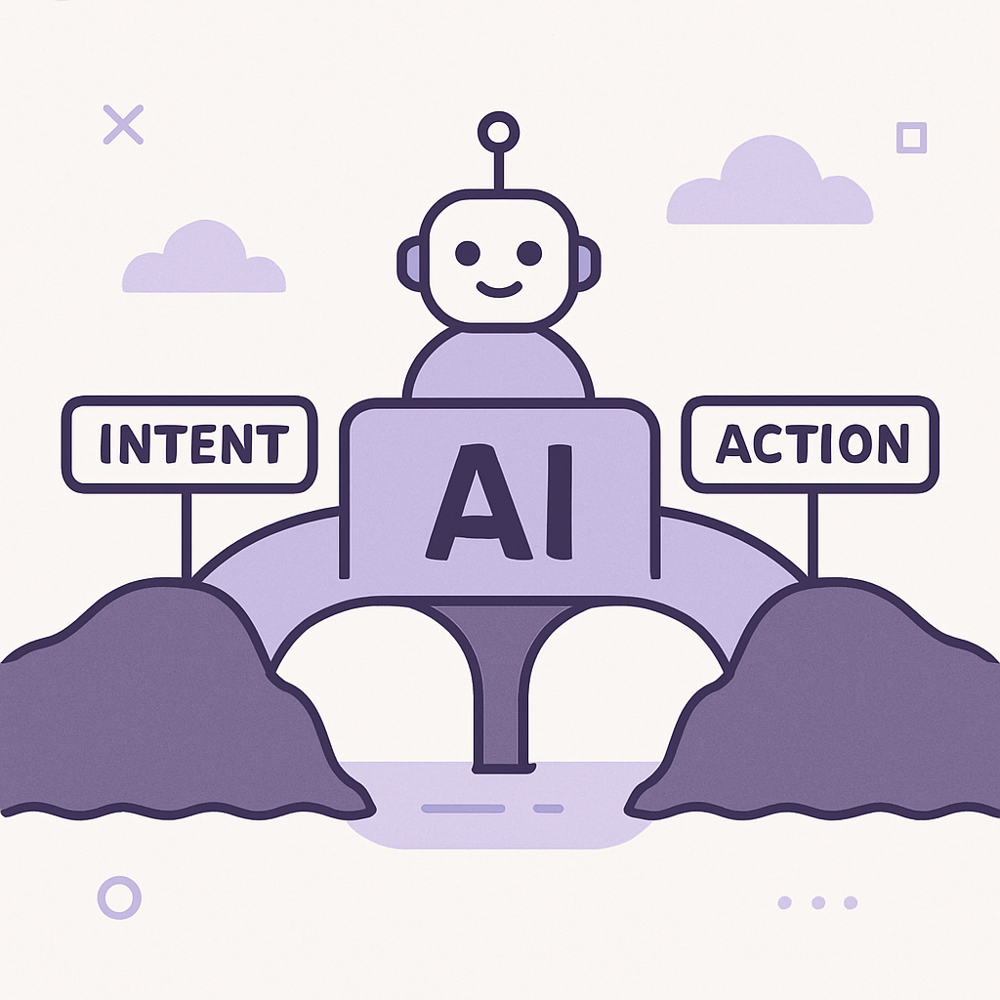

Publishing Recommendation
publishThe posts are well-aligned with the brand's practical and insightful tone, providing concrete examples and mechanisms of how AI is integrated into retention marketing strategies.
Today's posts effectively leverage current AI trends, such as Google's Gemini app and Accel's India fund, to underscore Purands AI's capabilities in retention marketing. They maintain a clear focus on practical applications and measurable outcomes, consistent with our brand voice. The content avoids hype and stays grounded in tangible benefits, making it suitable for publication.
LinkedIn Posts (10)
1. Google’s Gemini app surges to 1 billion users ★ Purands solution · high priority
CTA: How are you integrating conversational AI into your retention strategy?
Caption: Gemini's user growth highlights the rise of conversational AI.
Alternative hooks
- 1 billion users. That's the staggering number Gemini, Google's chatbot app, has hit.
- Gemini's growth to 1 billion users shows the power of conversational AI.
- In customer engagement, conversational AI is now a cornerstone.
Research behind this post (sources, summaries & confidence)
Google’s Gemini app surges to 1 billion users conf 0.90 · AI industry
Gemini's rapid user growth showcases the increasing adoption of AI-powered chatbots, indicating a trend towards conversational AI in customer engagement, which is crucial for retention marketing.
Sources & what I took from each
- Google’s Gemini app reaches 1 billion users: Both TechCrunch and The Verge report on the rapid growth of Gemini to 1 billion users. ↗ read source
- Google’s Gemini app reaches 1 billion users: The Verge corroborates the user milestone, emphasizing its rapid growth. ↗ read source
Statistics
- Gemini app reaches 1 billion users
Original trend links
- https://techcrunch.com/2026/08/11/googles-gemini-app-surges-to-one-billion-users/
- https://www.theverge.com/ai-artificial-intelligence/978113/chatgpt-gemini-1-billion-users
Risks / caveats
- High user numbers do not necessarily translate to active or engaged users.
2. Accel closes oversubscribed $550M India fund ★ Purands solution · high priority
CTA: How do you see this influencing retention marketing in your business?
Caption: Accel's $550M fund signals growth in AI and tech startups.
Alternative hooks
- Accel's $550 million fund in India signals a new era for AI startups.
- Indian tech startups just got a $550 million vote of confidence from Accel.
- What does a $550 million fund in India mean for AI and tech in APAC?
Research behind this post (sources, summaries & confidence)
Accel closes oversubscribed $550M India fund conf 0.85 · AI startups
Accel's focus on the Indian market underscores the region's growing importance in the AI and tech startup ecosystems, which could influence retention marketing strategies in APAC.
Sources & what I took from each
- Accel closes oversubscribed $550M India fund: TechCrunch covers Accel's newly closed India fund and its implications. ↗ read source
Statistics
- $550 million fund closed by Accel in India
Original trend links
Risks / caveats
- The fund's success depends on the performance of the startups it invests in.
3. Salesforce rolls out new Slackbot AI agent ★ Purands solution · high priority
CTA: How do you see AI agents fitting into your customer engagement strategy?
Alternative hooks
- Salesforce's AI Slackbot is shaking up the CRM landscape.
- AI agents are the future of customer engagement.
- How can AI agents transform your CRM strategy?
Research behind this post (sources, summaries & confidence)
Salesforce rolls out new Slackbot AI agent conf 0.80 · AI industry
The introduction of Salesforce's AI Slackbot represents a significant step in integrating AI into CRM and customer engagement tools, aligning with the trend of using AI for enhanced customer interaction.
Sources & what I took from each
- Salesforce rolls out new Slackbot AI agent: VentureBeat discusses Salesforce's launch of an AI-powered Slackbot. ↗ read source
Original trend links
Risks / caveats
- Adoption rates for new AI tools can vary and may not meet expectations.
4. Railway secures $100 million to challenge AWS with AI-native cloud infrastructure ★ Purands solution · high priority
CTA: How do you see AI-native cloud infrastructure impacting your data strategies?
Alternative hooks
- What if AI-native cloud infrastructure could change the way we handle retention marketing?
- Railway's $100 million bet on AI-native cloud is a wake-up call for cloud giants.
- Can AI-native infrastructure redefine retention marketing strategies?
Research behind this post (sources, summaries & confidence)
Railway secures $100 million to challenge AWS with AI-native cloud infrastructure conf 0.75 · AI industry
Railway's funding to build AI-native cloud infrastructure could reshape AI deployment strategies, impacting how retention marketing platforms scale and manage data.
Sources & what I took from each
- Railway secures $100 million to build AI-native cloud infrastructure: VentureBeat reports on Railway's funding and its goals to challenge AWS. ↗ read source
Statistics
- $100 million funding for Railway
Original trend links
Risks / caveats
- Challenging established players like AWS requires significant resources and strategic execution.
5. AI startups ★ Purands solution · high priority
CTA: How do you see AI personal agents shaping customer engagement in the next few years?
Caption: River AI's funding reflects the surge in AI personal agents.
Alternative hooks
- $1.1B in two months. River AI is shaking up the AI personal agent space.
- Personal AI agents are getting a big vote of confidence with River AI's $1.1B funding.
- Why is everyone talking about River AI and their $1.1B funding? It's all about personal agents.
Research behind this post (sources, summaries & confidence)
General Catalyst leads $1.1B round into 2-month-old River AI conf 0.70 · AI startups
River AI's rapid $1.1B funding indicates strong investor confidence in AI startups focusing on personal agents. These agents align with Purands AI's focus on AI-powered customer engagement and retention.
Sources & what I took from each
- General Catalyst leads $1.1B round into River AI: TechCrunch article confirms the funding round led by General Catalyst. ↗ read source
Original trend links
Risks / caveats
- The rapid investment could be speculative, and the company is still very young, possibly lacking a proven track record.
6. Anthropic launches Cowork, a Claude Desktop agent ★ Purands solution · high priority
CTA: How do you see AI transforming your customer retention strategies?
Alternative hooks
- Can AI agents truly boost customer retention?
- Integrating AI agents into workflows isn't just a trend - it's a need.
- How AI is transforming customer engagement in real time.
Research behind this post (sources, summaries & confidence)
Anthropic launches Cowork, a Claude Desktop agent conf 0.70 · AI startups
Cowork's launch highlights the movement towards AI agents that can operate within existing workflows, promoting efficiency and potentially increasing customer retention through better service.
Sources & what I took from each
- Anthropic launches Cowork, a Claude Desktop agent: VentureBeat details the launch and features of the Cowork agent. ↗ read source
Original trend links
Risks / caveats
- The market for desktop AI agents may be niche compared to other AI applications.
7. AI Startups ★ Purands solution · high priority
CTA: How are you leveraging AI to connect and retain your customers?
Alternative hooks
- Listen Labs just raised $69M to enhance AI customer interviews.
- AI in customer interviews: $69M investment by Listen Labs.
- Scaling AI for customer insights: Listen Labs raises $69M.
Research behind this post (sources, summaries & confidence)
Listen Labs raises $69M to scale AI customer interviews conf 0.70 · AI startups
The focus on scaling AI-powered customer interviews can enhance understanding of customer needs, a critical aspect of designing effective retention strategies.
Sources & what I took from each
- Listen Labs raises $69M for AI customer interviews: VentureBeat reports on Listen Labs' funding round and its focus on AI-powered customer interviews. ↗ read source
Statistics
- $69 million raised by Listen Labs
Original trend links
Risks / caveats
- The effectiveness of AI in accurately understanding complex customer needs remains to be fully proven.
8. AI-driven purchase intent rarely becomes a completed sale ★ Purands solution · high priority
CTA: Have you faced challenges converting AI-driven intent into sales? Share your experience.

⬇ Download image{kind=link}
Image prompt · flat-vector
Caption: Bridging the gap between AI intent and sales.
Alternative hooks
- AI-driven purchase intent often falls short of a sale.
- Why do AI predictions struggle to close the deal?
- Bridging the gap between intent and action in AI-driven sales.
Research behind this post (sources, summaries & confidence)
AI-driven purchase intent rarely becomes a completed sale conf 0.70 · AI industry
Identifying gaps between AI-driven purchase intent and actual sales completion is crucial for refining AI strategies in retention marketing to boost conversion rates.
Sources & what I took from each
- AI-driven purchase intent rarely becomes a completed sale: VentureBeat article analyzes the challenges in converting AI-driven purchase intent into sales. ↗ read source
Original trend links
Risks / caveats
- AI systems may not fully account for human behaviors and external factors influencing purchase decisions.
9. SpaceXAI's Grok Bot turns agents into persistent digital coworkers ★ Purands solution · high priority
CTA: How do you see persistent AI agents changing your business operations?
Alternative hooks
- Persistent digital coworkers are no longer science fiction.
- AI agents that never clock out? Welcome to the future.
- What if your best coworker was a digital agent?
Research behind this post (sources, summaries & confidence)
SpaceXAI's Grok Bot turns agents into persistent digital coworkers conf 0.60 · AI startups
Grok Bot's development indicates a trend towards persistent AI agents for operational tasks, which can influence customer engagement and retention strategies.
Sources & what I took from each
- SpaceXAI's Grok Bot turns agents into persistent digital coworkers: VentureBeat details Grok Bot's capabilities and potential applications. ↗ read source
Original trend links
Risks / caveats
- The concept of persistent digital coworkers is still relatively new and untested on a large scale.
10. OpenAI launches ChatGPT desktop app for Linux
CTA: How do you see AI tools like ChatGPT changing workflows on Linux?
Alternative hooks
- Linux users, rejoice: ChatGPT has landed on your desktop.
- OpenAI's ChatGPT is now available on Linux - here's why it matters.
- AI meets open-source: ChatGPT's Linux desktop app is here.
Research behind this post (sources, summaries & confidence)
OpenAI launches ChatGPT desktop app for Linux conf 0.80 · AI industry
The release of ChatGPT for Linux broadens the accessibility of AI tools, which can enhance customer service and retention strategies by leveraging AI chatbots.
Sources & what I took from each
- OpenAI launches ChatGPT desktop app for Linux: TechCrunch article confirms the launch of the ChatGPT desktop app for Linux. ↗ read source
Original trend links
Risks / caveats
- Linux user base is smaller compared to other operating systems, potentially limiting immediate impact.
Today's Trends
| # | Trend | Category | Why it matters |
|---|---|---|---|
| 1 | General Catalyst leads $1.1B round into 2-month-old River AI
source |
AI startups | River AI's rapid $1.1B funding indicates strong investor confidence in AI startups focusing on personal agents. These agents align with Purands AI's focus on AI-powered customer engagement and retention. |
| 2 | Google’s Gemini app surges to 1 billion users
source source |
AI industry | Gemini's rapid user growth showcases the increasing adoption of AI-powered chatbots, indicating a trend towards conversational AI in customer engagement, which is crucial for retention marketing. |
| 3 | Salesforce rolls out new Slackbot AI agent
source |
AI industry | The introduction of Salesforce's AI Slackbot represents a significant step in integrating AI into CRM and customer engagement tools, aligning with the trend of using AI for enhanced customer interaction. |
| 4 | Anthropic launches Cowork, a Claude Desktop agent
source |
AI startups | Cowork's launch highlights the movement towards AI agents that can operate within existing workflows, promoting efficiency and potentially increasing customer retention through better service. |
| 5 | Accel closes oversubscribed $550M India fund
source |
AI startups | Accel's focus on the Indian market underscores the region's growing importance in the AI and tech startup ecosystems, which could influence retention marketing strategies in APAC. |
| 6 | Railway secures $100 million to challenge AWS with AI-native cloud infrastructure
source |
AI industry | Railway's funding to build AI-native cloud infrastructure could reshape AI deployment strategies, impacting how retention marketing platforms scale and manage data. |
| 7 | SpaceXAI's Grok Bot turns agents into persistent digital coworkers
source |
AI startups | Grok Bot's development indicates a trend towards persistent AI agents for operational tasks, which can influence customer engagement and retention strategies. |
| 8 | WhatsApp commerce dynamics in APAC | WhatsApp commerce | Understanding WhatsApp's role in commerce within APAC is critical for retention marketing strategies, especially for Purands AI's focus on WhatsApp-first commerce solutions. |
| 9 | OpenAI launches ChatGPT desktop app for Linux
source |
AI industry | The release of ChatGPT for Linux broadens the accessibility of AI tools, which can enhance customer service and retention strategies by leveraging AI chatbots. |
| 10 | Google just redesigned the search box for the first time in 25 years
source |
AI industry | Google's redesign of its search interface could impact how consumers interact with AI-driven search results, influencing digital marketing strategies. |
| 11 | Mistral AI wants to build 1 gigawatt of European compute by 2030
source |
AI startups | Mistral AI's ambitious infrastructure goals highlight the growing demand for AI compute power, which could affect cloud-based retention marketing platforms. |
| 12 | Listen Labs raises $69M to scale AI customer interviews
source |
AI startups | The focus on scaling AI-powered customer interviews can enhance understanding of customer needs, a critical aspect of designing effective retention strategies. |
| 13 | OpenAI launches GPT-5.6-Cyber for cybersecurity tasks
source |
AI industry | The development of specialized AI models for cybersecurity tasks reflects AI's growing role in securing digital interactions, relevant for retention platforms ensuring data protection. |
| 14 | AI-driven purchase intent rarely becomes a completed sale
source |
AI industry | Identifying gaps between AI-driven purchase intent and actual sales completion is crucial for refining AI strategies in retention marketing to boost conversion rates. |
Risk Assessment
No risks flagged.
Suggested LinkedIn Comments (30)
Open each post, then paste the copied comment. Nothing is posted automatically.
1. opinion · rss:techcrunch.com — Phia, the shopping startup co-founded by Phoebe Gates and Sophia Kianni, is once
Post by: rss:techcrunch.com
Why it works: It addresses the ethical dimensions of AI-powered business operations, adding depth to the discussion.
↗ Open LinkedIn post to paste comment2. insight · rss:techcrunch.com — The U.S. VC firm still has more than 55% of its previous $650 million India fund
Post by: rss:techcrunch.com
Why it works: It provides an analytical perspective on VC strategy in a specific geographic market.
↗ Open LinkedIn post to paste comment3. expansion · rss:techcrunch.com — The divestiture comes as the two once-tight companies have started to diverge on
Post by: rss:techcrunch.com
Why it works: It adds context about the nature of business alliances and their evolution over time.
↗ Open LinkedIn post to paste comment4. opinion · rss:techcrunch.com — In a new alert, the FBI said cybercriminals are targeting adults and minors in a
Post by: rss:techcrunch.com
Why it works: It stresses the urgency of cybersecurity, a critical issue for all digital users.
↗ Open LinkedIn post to paste comment5. insight · rss:techcrunch.com — OpenAI is finally bringing a dedicated ChatGPT desktop app to Linux operating sy
Post by: rss:techcrunch.com
Why it works: It connects the product update with its potential impact on a specific user segment.
↗ Open LinkedIn post to paste comment6. insight · rss:techcrunch.com — Google also shared numbers of how people are actually using the chatbot, with 63
Post by: rss:techcrunch.com
Why it works: It interprets user behavior data to predict future trends in AI interaction.
↗ Open LinkedIn post to paste comment7. opinion · rss:techcrunch.com — Over a year following its post-election surge, Bluesky’s mobile app is seeing a
Post by: rss:techcrunch.com
Why it works: It draws a lesson from Bluesky's situation about user retention and product lifecycle.
↗ Open LinkedIn post to paste comment8. insight · rss:techcrunch.com — Scaleup Europe, a public-private fund with a $5.7 billion target, made its first
Post by: rss:techcrunch.com
Why it works: It highlights the strategic importance of a specific investment in a growing industry.
↗ Open LinkedIn post to paste comment9. expansion · rss:techcrunch.com — One of OpenAI's longest-serving executives is headed out the door, although the
Post by: rss:techcrunch.com
Why it works: It connects a leadership change to potential strategic impacts, offering a broader view.
↗ Open LinkedIn post to paste comment10. insight · rss:techcrunch.com — River AI, a startup founded by xAI co-founder Igor Babuschkin, has a fascinating
Post by: rss:techcrunch.com
Why it works: It connects investment news to broader trends in AI, providing context on market interest.
↗ Open LinkedIn post to paste comment11. opinion · rss:www.theverge.com — After a former lead writer claimed Saber "replaced me with ChatGPT," CEO Matthew
Post by: rss:www.theverge.com
Why it works: This comment addresses the core issue of transparency, which is central to the debate about AI's role in creative industries.
↗ Open LinkedIn post to paste comment12. insight · rss:www.theverge.com — Did a prototype Microsoft gamepad fall off the back of a truck? We can't say, bu
Post by: rss:www.theverge.com
Why it works: This comment links the leak to broader themes of consumer interest and supply chain challenges, adding depth to the conversation.
↗ Open LinkedIn post to paste comment13. insight · rss:www.theverge.com — It looks like we'll be getting a successor to the Sonos Ace headphones sometime
Post by: rss:www.theverge.com
Why it works: This comment connects the product update to industry trends, providing context for why such innovations are necessary.
↗ Open LinkedIn post to paste comment14. insight · rss:www.theverge.com — For the 14th time, a Google product has hit 1 billion users. Google CEO Sundar P
Post by: rss:www.theverge.com
Why it works: The comment praises Google's ecosystem strategy, which is crucial to understanding how Gemini reached its user milestone.
↗ Open LinkedIn post to paste comment15. insight · rss:www.theverge.com — Meta has launched a Threads app for Meta Quest VR headsets, the company announce
Post by: rss:www.theverge.com
Why it works: The comment ties the product launch to Meta's broader strategy, offering a strategic perspective on the news.
↗ Open LinkedIn post to paste comment16. insight · rss:www.theverge.com — Google TV Freeplay, the company's free, ad-supported streaming service, now supp
Post by: rss:www.theverge.com
Why it works: This comment highlights the strategic shift to on-demand services, which is key to understanding the platform's evolution.
↗ Open LinkedIn post to paste comment17. opinion · rss:www.theverge.com — Brad Lightcap, OpenAI's special projects lead and the company's former COO, anno
Post by: rss:www.theverge.com
Why it works: The comment provides a positive angle on his departure, suggesting potential benefits for the wider AI community.
↗ Open LinkedIn post to paste comment18. insight · rss:www.theverge.com — Looking for great pair of earbuds that work particularly well with Android phone
Post by: rss:www.theverge.com
Why it works: This comment focuses on the consumer value aspect, which is central to understanding the product's market appeal.
↗ Open LinkedIn post to paste comment19. opinion · rss:www.theverge.com — Last year's Made by Google event for the Pixel 10 resembled a late night talk sh
Post by: rss:www.theverge.com
Why it works: The comment recognizes a shift in marketing strategy, offering a nuanced view on the event's format.
↗ Open LinkedIn post to paste comment20. insight · rss:www.theverge.com — Google is gearing up to reveal a bunch of new Pixel devices on August 12th. A se
Post by: rss:www.theverge.com
Why it works: This comment highlights the potential impact of new features, framing them as part of Google's innovation strategy.
↗ Open LinkedIn post to paste comment21. insight · rss:feeds.arstechnica.com — FBI Atlanta confirms it's looking into the incident, no arrests made.
Post by: rss:feeds.arstechnica.com
Why it works: It highlights the complexity and need for expertise in handling cyber incidents, adding a layer of understanding to the post.
↗ Open LinkedIn post to paste comment22. insight · rss:feeds.arstechnica.com — It took just hours for the leading pharma group to reject the recommendations.
Post by: rss:feeds.arstechnica.com
Why it works: It provides a broader context about the clash between science and business, adding depth to the post.
↗ Open LinkedIn post to paste comment23. insight · rss:feeds.arstechnica.com — This follows many drone incursions into Romania and a failed attack in Germany.
Post by: rss:feeds.arstechnica.com
Why it works: It connects the post's information with the broader need for updated defense strategies, providing a practical perspective.
↗ Open LinkedIn post to paste comment24. insight · rss:feeds.arstechnica.com — Device-bound session credentials thwart an increasingly common form of account t
Post by: rss:feeds.arstechnica.com
Why it works: It acknowledges the advancement and necessity of innovation in security, which ties directly to the post's focus.
↗ Open LinkedIn post to paste comment25. insight · rss:feeds.arstechnica.com — Judges tell Meta that Section 230 provides a defense, not immunity from lawsuits
Post by: rss:feeds.arstechnica.com
Why it works: It clarifies the legal nuances and challenges, providing a deeper understanding of the issue discussed in the post.
↗ Open LinkedIn post to paste comment26. opinion · rss:feeds.arstechnica.com — But will Gemini's surge survive slowing model releases?
Post by: rss:feeds.arstechnica.com
Why it works: It shifts focus from model releases to the importance of real-world impact, offering a practical perspective.
↗ Open LinkedIn post to paste comment27. insight · rss:feeds.arstechnica.com — Depending on the model, you might have hundreds to choose from—or just one.
Post by: rss:feeds.arstechnica.com
Why it works: It points out a potential downside of having too many choices, which is a practical angle not immediately obvious from the post.
↗ Open LinkedIn post to paste comment28. insight · rss:feeds.arstechnica.com — FDA report reveals where Taylor Farms sent its lettuce—and it raises questions.
Post by: rss:feeds.arstechnica.com
Why it works: It emphasizes the importance of transparency in food safety, which aligns with consumer concerns.
↗ Open LinkedIn post to paste comment29. opinion · rss:feeds.arstechnica.com — Hot hours of summer could triple in the coming decades.
Post by: rss:feeds.arstechnica.com
Why it works: It provides a strong call to action, aligning with the urgency of the climate issue discussed in the post.
↗ Open LinkedIn post to paste comment30. insight · rss:feeds.arstechnica.com — Claire Stapleton's new book, <em>Don't Be Evil</em>, recounts her journey from c
Post by: rss:feeds.arstechnica.com
Why it works: It connects the personal story to a universal theme about ethics in corporate culture, offering a broader perspective.
↗ Open LinkedIn post to paste comment